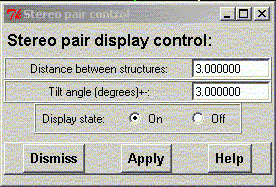
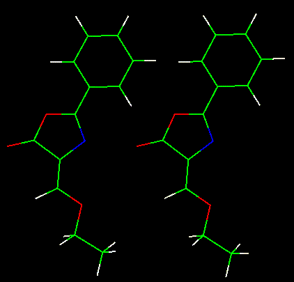

**************************************************************************
Plot stereo pair ("crossed eye") widget
Leif Laaksonen CSC 1999
**************************************************************************
It is possible to generate a stereo pair or "crossed eye" view of a system. The view is built by duplicating the object, with a defined distance, and rotating the two pictures with a small angle.
There are two values that have to be defined:
Usually there is no need to change the "tilt" angle but the distance between the two images of the structure needs to be specified.
Click on the Display state: "On" and theon the "Apply" button to activate the display. If you need to change the distance between the two images write in a new value into the widget and press the "Apply" button.
The display should look like the following when the "crossed" eye stereo is on.
Line command: define spair
**************************************************************************
LUL/1999
**************************************************************************